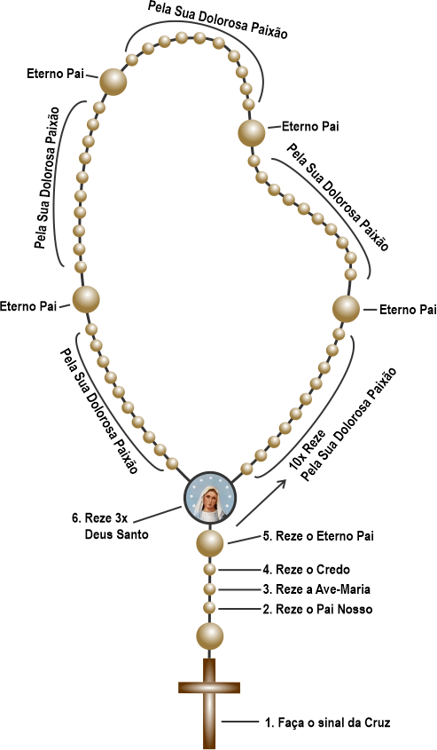

Aqui é mostrado o exemplo visual de como rezar o Terço da misericórdia, logo abaixo mostrará as informações necessárias para rezá-lo.

A oração do Terço da Divina Misericórdia tem como finalidade pedir a misericórdia de Deus por toda a humanidade, fortalecendo nossa confiança no amor de Cristo e meditando Sua dolorosa Paixão.
Passo a passo de como rezar o Terço da Misericórdia
Faça o Sinal da Cruz
Em nome do Pai, do Filho e do Espírito Santo. Amém!
Reze o Pai Nosso
Segurando a primeira conta pequena do terço, reze a oração do Pai Nosso.
Pai Nosso que estais nos céus, santificado seja o Vosso nome; venha a nós o Vosso Reino; seja feita a Vossa vontade, assim na terra como no céu. O pão nosso de cada dia nos dai hoje; perdoai-nos as nossas ofensas, assim como nós perdoamos a quem nos tem ofendido; e não nos deixeis cair em tentação, mas livrai-nos do mal. Amém.
Reze a Ave-Maria
Segurando a segunda conta pequena, reze a Ave-Maria.
Ave Maria, cheia de graça, o Senhor é convosco. Bendita sois vós entre as mulheres e bendito é o fruto do vosso ventre, Jesus. Santa Maria, Mãe de Deus, rogai por nós pecadores, agora e na hora de nossa morte. Amém.
Reze o Credo
Segurando a terceira conta pequena, reze a oração do Credo.
Creio em Deus Pai todo-poderoso, Criador do céu e da terra; e em Jesus Cristo, seu único Filho, nosso Senhor; que foi concebido pelo poder do Espírito Santo; nasceu da Virgem Maria; padeceu sob Pôncio Pilatos, foi crucificado, morto e sepultado; desceu à mansão dos mortos; ressuscitou ao terceiro dia; subiu aos céus; está sentado à direita de Deus Pai todo-poderoso, donde há de vir julgar os vivos e os mortos. Creio no Espírito Santo, na Santa Igreja Católica, na comunhão dos santos, na remissão dos pecados, na ressurreição da carne e na vida eterna. Amém.
Reze as 5 dezenas do Terço da Misericórdia
Nas contas grandes, reze:
Eterno Pai,
Eu Vos ofereço o Corpo e Sangue,
Alma e Divindade de Vosso diletíssimo Filho,
Nosso Senhor Jesus Cristo,
Em expiação dos nossos pecados
E do mundo inteiro.
Pela Sua dolorosa Paixão,
Tende misericórdia de nós
e do mundo inteiro.
Reze 3 vezes Deus Santo
Ao final do terço, reze três vezes:
Deus Santo,
Deus Forte,
Deus Imortal,
Tende piedade de nós
e do mundo inteiro.
Esperamos ter ajudado você a aprender como rezar o Terço da Misericórdia e a crescer na confiança no infinito amor de Deus.
Aprenda também como rezar o Santo Terço →